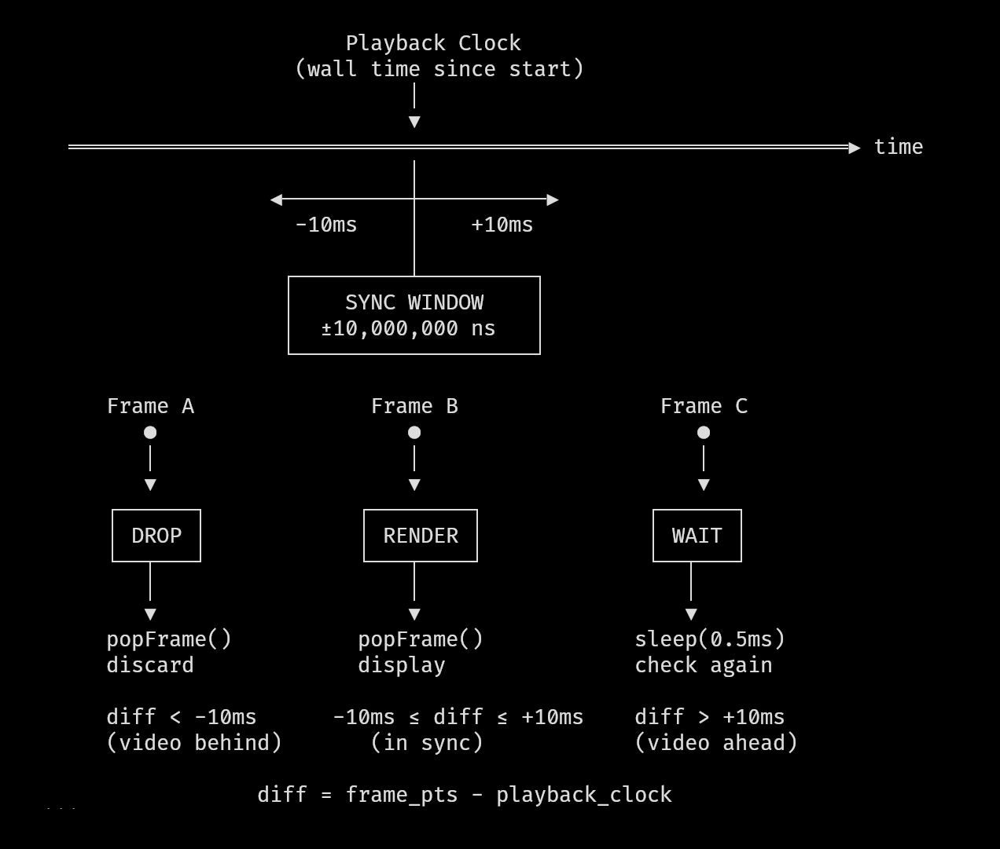
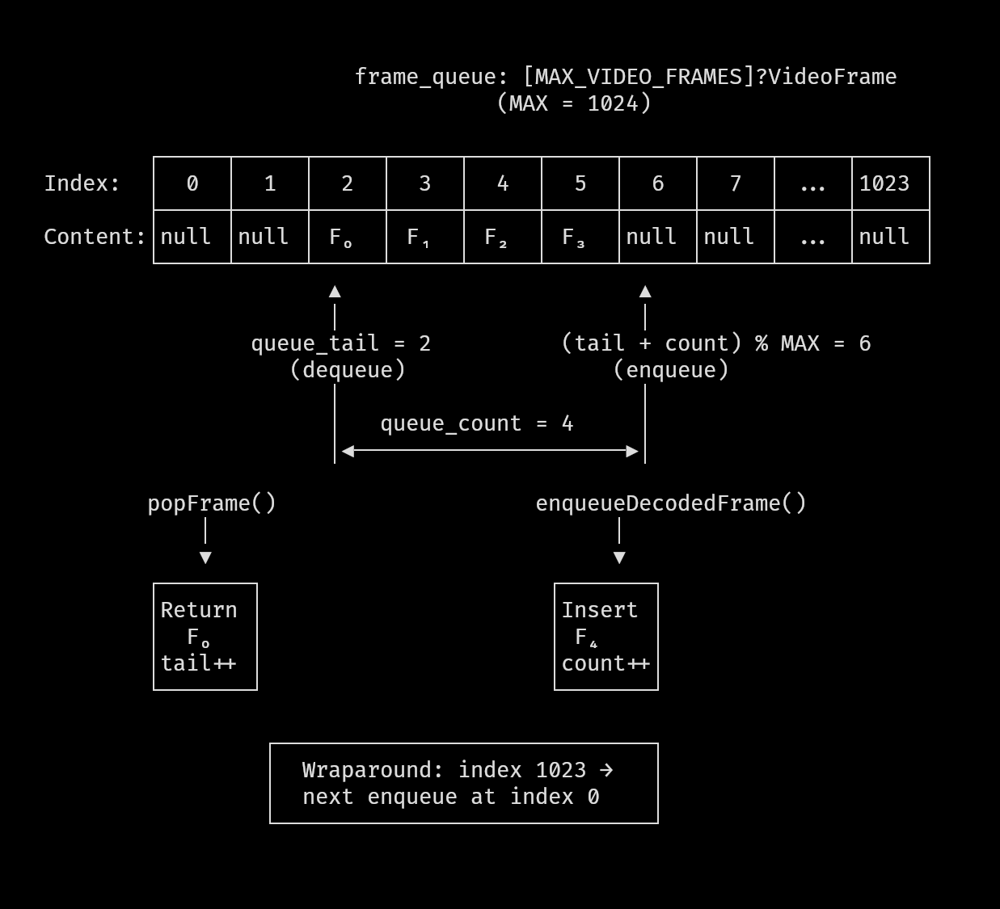

This is the first article in "The Making of movycat" - a behind-the-scenes look at building a terminal video player in Zig.
When I started, I thought it would be straightforward: I could already render frames in the terminal, and FFmpeg can decode pretty much any video format. How hard could it be to wire them together?
Within seconds of playback, audio and video were visibly drifting. Effects missed their beats. Pausing broke timing. Seeking made everything fall apart.
Turns out, there's a gap between "decode frames and display them" and "build a video player."
This series documents what I discovered along the way - the hidden complexity, the surprising gotchas, and the solutions I built. Not API tutorials, but what it takes to make the pieces actually work together.
This first article focuses on the constraints that make or break the playback hot path:
A/V Synchronization - one clock, clear tolerance, and decisive render/drop/wait behavior
Speed - zero allocations in the hot path and bounded per-frame work
Stability - explicit budgets and timeouts that fail fast instead of degrading silently
They directly shape the control flow, data structures, and failure modes of the player.
One Clock to Rule Them All
My first attempt had no synchronization at all - just decode and display frames as fast as possible. Before adding complexity, I wanted to see how far that would get me.
For testing, I intentionally used demoscene videos, where music and visuals are tightly coupled and effects are precisely timed to the beat.
Very quickly, the problem was obvious: effects were firing after their corresponding beats. It became clear there’s no cheap way to “just use what the codecs return.”
My first instinct was the straightforward one: if I want proper A/V synchronization, I need to track where audio playback is, and sync video to that position. I tried querying SDL for the audio queue position. But the queue position tells you how much audio is buffered, not what's audible right now. That's not useful for sync.
That's when I realized I was overcomplicating things. After all, audio plays back in real-time - that's what SDL guarantees, assuming a stable audio device clock. If I started playback at time T and N nanoseconds have passed, the audio at position N is what the user hears now. I don't need to query anything. The elapsed wall clock time since playback started is the audio position. (In a full media player you might track device latency and drift more explicitly, but for movycat this model is intentionally simple - and it holds up well in practice.)
This simplified the entire synchronization model. I "only" need to sync video against the clock. Audio runs by itself - I just push samples continuously, and SDL plays them at the correct rate.
When playback starts, I record the current time in clock_start_ns. The playback clock is just "now minus when we started." This clock advances continuously, and video frames must keep up.
Here’s how the clock is used in the synchronization loop:
Conceptually, the synchronization loop is simple: compare the frame’s presentation timestamp to the playback clock, and decide whether to render, drop, or wait.
// File: src/movycat.zig:177-220if (decoder.video.queue_count > 0) {
if (decoder.video.peekFrame()) |head| {
const playback_time_ns = decoder.getPlaybackClock();
const head_pts_i64 = @as(i64, @intCast(head.pts_ns));
const audio_i64 = @as(i64, @intCast(playback_time_ns));
const diff = head_pts_i64 - audio_i64;
controller.pkt_ctr += 1;
if (diff <= SYNC_WINDOW_NS and diff >= -SYNC_WINDOW_NS) {
if (decoder.video.popFrame()) |frame_ptr| {
controller.frame_ctr += 1;
// ... render the frame
}
} elseif (diff < -SYNC_WINDOW_NS) {
// Video is behind - drop the frame!
_ = decoder.video.popFrame();
} else {
// Too early -> just wait a bit
std.Thread.sleep(500_000);
}
}
}
This is a three-way decision that runs every iteration of the main loop:
Within tolerance: The frame's PTS is close enough to the playback clock - render it now
Video behind: The frame is older than what we should be showing - drop it and move on
Video ahead: The frame isn't due yet - wait briefly and check again

Image: Timeline diagram sync window with frame PTS vs audio clock, illustrating render/drop/wait decisions Place image at: arender/output/movycat/real-time-video-from-decode-to-display/images/timeline-diagram-sync-window-with-frame-pts-vs-audio-clock-illustrating-renderdropwait-decisions.png
'">
Timeline diagram sync window with frame PTS vs audio clock, illustrating render/drop/wait decisions
Choosing the Sync Window
The sync tolerance is defined at the top of movycat.zig:
That's 10 milliseconds - frames within +/-10ms of the target time are acceptable. I arrived at this value through iteration. I started with +/-5ms, thinking tighter would be better. But then increased it, as frames were being dropped, causing unnecessary stuttering.
The comparison logic uses a two-sided window because timing can go wrong in both directions. A frame might arrive late (video decoding was slow) or "early" (we processed packets faster than expected). Both need handling.
Out-of-Order Frames: A Lesson from the Decoder
When testing various different video formats, I encountered a video where the output made no sense - frames appeared to be rendering in random order, creating visual noise. I went to the FFmpeg documentation to understand what was happening, and learned something important: avcodec_receive_frame() can deliver frames in decode order, not display order.
Video codecs with B-frames (bidirectional prediction) decompress frames in a different sequence than their intended display order. The frame's pts field indicates the correct display time, and I need to respect that timestamp rather than assuming frames arrive sequentially. Here's how I extract the presentation timestamp:
The fallback to best_effort_timestamp handles cases where pts is unavailable. FFmpeg computes this estimate using various heuristics from the stream. The timestamp also needs conversion from the stream's time base (which varies per container format) to nanoseconds.
Out-of-order delivery isn’t just a display-order problem. It also means the next frame you receive might already be too late to show - which makes frame dropping a first-class part of synchronization.
Frame Dropping: The Unpleasant Necessity
When video falls behind audio, there's only one option: throw frames away. The line _ = decoder.video.popFrame() looks innocent, but it represents a hard truth about real-time systems - this is where theory collides with reality. You can't negotiate with time. If a frame's moment has passed, rendering it late makes things worse, not better.
I initially tried to be "clever" about dropping - maybe skip every other frame instead of catching up immediately. That was a mistake. Partial measures just drag out the desync, creating a janky experience where audio and video never quite line up. Aggressive catching up (dropping all late frames) actually looks better because you get back in sync quickly.
The Audio Pipeline
For audio, I use SDL2's push-based audio queue. The SDL audio device is configured with the sample rate and channel count from the media file itself:
When an audio packet arrives from FFmpeg, it gets decoded, converted to 16-bit PCM, and pushed to SDL's queue. SDL consumes this queue at the device's native rate. As discussed earlier, I don't query SDL for playback position - I just push samples continuously and trust that the wall clock tracks what's audible.
Handling Videos Without Audio
Not all videos have audio. movycat needs to handle videos without audio streams. The audio state is optional:
When audio is absent, the playback clock still runs based on system time. The sync logic remains exactly the same - we compare frame timestamps against elapsed time.
Zero Allocations in the Hot Path
Once timing is correct, latency becomes the dominant constraint. The playback hot path has a fixed per-frame budget, and any unbounded work shows up immediately.
For that reason, I avoided allocations during playback by design. Decoding, queuing, and rendering operate on preallocated structures with bounded cost per frame.
At 30 frames per second, the budget is 33 milliseconds. After decode, scaling, rendering, and terminal output, there is effectively no headroom.
The frame queue is therefore implemented as a fixed-size ring buffer:
A fixed array of 1024 frame slots, the array exists for the lifetime of the decoder. New frames go in at (queue_tail + queue_count) % MAX_VIDEO_FRAMES, and consumed frames come out at queue_tail.
Why 1024 Frames?
The size came from estimating worst-case scenarios. At 30fps, 1024 frames is about 34 seconds of video. That's enough buffer for:
Decode bursts where the CPU processes packets faster than real-time
I/O hiccups where reading from disk stalls temporarily
Temporary CPU spikes from other processes
I experimented with smaller sizes. At 128 frames (~4 seconds), playback worked fine, but seeking exposed the limits - the buffer was too small to absorb decode warmup after a jump.
I increased the size iteratively while testing different files. Seeking turned out to be surprisingly complex, and I’ll cover that in the next article. For now, 1024 frames provided enough headroom that buffer size stopped influencing playback behavior.
The ring buffer stores ?VideoFrame - optional frame references. Each slot is either null (empty) or contains a frame pointer and its presentation timestamp:
Storing the PTS alongside the frame pointer avoids recomputing timestamps every time we check if a frame is ready to display. The computation involves floating-point division and multiplication, which isn't expensive once, but adds up when you're polling the queue hundreds of times per second.
Enqueue: Adding Frames to the Queue
When a frame is decoded and ready for playback, it goes into the ring buffer:
The overflow policy is deliberate: when the queue is full, drop the oldest frame, not the newest. The oldest frame is the most likely to already be late for display. New frames at least have a chance of being rendered on time.
There's also duplicate detection - some codecs can produce multiple frames with identical timestamps. Without the last_enqueued_pts_ns check, these would clog the queue with redundant data.
Classic FIFO with modulo wraparound. The peekFrame() function is similar but doesn't advance the tail pointer - it lets us check the next frame's PTS without committing to consume it.

Image: Diagram of ring buffer with head/tail pointers showing enqueue and dequeue positions Place image at: arender/output/movycat/real-time-video-from-decode-to-display/images/diagram-of-ring-buffer-with-headtail-pointers-showing-enqueue-and-dequeue-positions.png
'">
Diagram of ring buffer with head/tail pointers showing enqueue and dequeue positions
The Pre-Sync Filter
Before a frame even enters the queue, there's a sync check:
This filters at decode time rather than render time. If a frame is more than twice the sync window behind, it's dead on arrival - don't even bother storing it. The render window stays tight (+/-10ms) for presentation, but the enqueue filter is intentionally looser (2x) to avoid dropping frames prematurely during bursty decode. The bypass_sync parameter exists for seeking, where we intentionally decode frames we don't intend to display (more on that in the next article).
The 40ms Render Budget
Real-time systems need deadlines. Without them, problems hide until they become catastrophic. I added explicit timing checks to catch performance issues early:
40 milliseconds is a hard deadline, not a guideline. The render operation - scaling the decoded frame and mapping it to the terminal surface - should never exceed 40ms. When it does, something is wrong: the output size is too large, the CPU is overwhelmed, or there's a bug in the scaling code.
I chose 40ms based on measuring actual render times across different videos and terminal sizes. The 40ms threshold catches genuine problems without triggering on occasional slow frames (which can happen during CPU spikes).
Fail-Fast by Design
I deliberately made exceeding the render budget returning an error, not a warning.
The goal is not to degrade gracefully by dropping frames or trying harder. Playback is either smooth, or it stops. If the system can’t render frames within the budget, then it isn’t fast enough to play that video at that size, on that machine.
Allowing the player to continue with stutter and uneven pacing would be a worse experience than simply refusing to play.
The Decode Timeout
There's another deadline in the decode path:
// File: movy/src/video/video.zig:21pubconst DECODE_TIMEOUT_NS = 50_000_000;
// File: movy/src/video/video.zig:600-613pubfn tryReceiveFrame(self: *VideoState) !?*c.AVFrame {
const t_before = std.time.nanoTimestamp();
const res = c.avcodec_receive_frame(self.codec_ctx, self.frame);
const t_after = std.time.nanoTimestamp();
const decode_ns = t_after - t_before;
if (decode_ns > DECODE_TIMEOUT_NS) {
returnerror.DecodingTooSlow;
}
if (res == AVERROR_EAGAIN or res == c.AVERROR_EOF) returnnull;
if (res < 0) returnerror.ReceiveFailed;
return self.frame;
}
50ms for a single decode operation. FFmpeg's avcodec_receive_frame() shouldn't take that long for any reasonable video frame. When it does, something is wrong - corrupted data causing infinite loops, or a codec bug.
Threaded Decoding for Performance
Another optimization that helps meet these deadlines is threaded decoding. FFmpeg supports parallelizing the decode work across multiple CPU cores. I configure this during codec initialization:
FF_THREAD_FRAME tells FFmpeg to decode multiple frames in parallel - while one frame is being processed, the next is already starting. On a multi-core machine, this multiplies decode throughput for codecs that support it.
With this enabled, movycat can comfortably play even 4K videos - the decode stage stays within budget.
Putting It Together: The Main Loop
Here’s how all the pieces interact in practice - this loop is where synchronization, buffering, and deadlines finally meet.
The main playback loop in movycat does three things:
Check for ready frames: If there's a frame in the queue that should be rendered now, do it
Decode more frames: If the queue isn't full, read and process another packet
Handle end-of-file: When decoding is done and the queue is empty, stop
// File: src/movycat.zig:130-242while (!controller.isStopped()) {
loop_ctr += 1;
// Handle input (pause, seek, etc.)if (try movy.input.get()) |event| {
// ... input handling
}
if (controller.isPaused()) {
std.Thread.sleep(10_000_000);
continue;
}
// FIRST: Check if a frame is ready to renderif (decoder.video.queue_count > 0) {
// ... sync logic and rendering (shown earlier)
}
// THEN: Decode only if queue is not fullif (decoder.video.queue_count < movy_video.VideoState.MAX_VIDEO_FRAMES) {
const playback_time_ns = decoder.getPlaybackClock();
switch (try decoder.processNextPacket(
SYNC_WINDOW_NS,
playback_time_ns,
false,
)) {
.eof => reached_end = true,
else => {},
}
}
// All frames processedif (decoder.video.queue_count == 0 and reached_end) {
controller.stop();
}
std.Thread.sleep(1_000); // breathing space for CPU
}
The order matters. We check for renderable frames before trying to decode more. This ensures we're responsive to display timing even if decoding is slow. If we decoded first, a slow packet could cause us to miss a frame's deadline.
The tiny sleep at the bottom (1 microsecond) prevents the loop from spinning at 100% CPU when there's nothing to do.
Final Notes
Real-time video playback looks simple from the outside - files decode to frames, frames display on screen. The reality is a careful dance of timing, buffering, and hard deadlines.
With a single playback clock, bounded queues, and explicit budgets, linear playback becomes predictable. Frames either arrive in time or they don’t. Late frames are dropped. Early frames wait. When something runs too slow, the system fails fast instead of drifting silently.
This model holds as long as playback moves forward.
In the next article, I’ll look at what happens when that assumption breaks - when the user seeks, pauses, or jumps through time, and all of these carefully aligned pieces have to be rebuilt again.
This is the first article in "The Making of movycat" - a 4-part series about building a terminal video player in Zig.